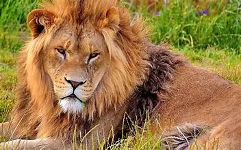
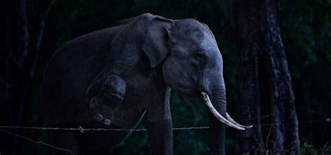
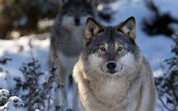

ლომი

აფრიკული ლომი
ლომი ერთ-ერთი ყველაზე ძლიერი მტაცებელია. ცხოვრობს ჯგუფებად, რომლებიც "პრაიდების" სახელითაა ცნობილი.
სპილო

აფრიკული სპილო
სპილო ყველაზე დიდი ხმელეთის ცხოველია. მისი ხორთუმი რთული და ძლიერი ორგანოა, რომელსაც უამრავი ფუნქცია აქვს.
ვეფხვი
 ბენგალური ვეფხვი
ბენგალური ვეფხვი
ვეფხვი ყველაზე დიდი ზომის კატისებრთა ოჯახიდან. ცნობილია თავისი უნიკალური ზოლებით.
მგელი

ნადირობისთვის მზად მყოფი მგელი
მგელები მაღალ ინტელექტით და უნივერსალური შელოცვის სტრატეგიებით გამოირჩევიან. ცხოვრობენ დახვეწილ იერარქიულ ჯგუფებში.
ჟირაფი
 ჟირაფი ბუნებრივ გარემოში
ჟირაფი ბუნებრივ გარემოში
ჟირაფს აქვს ყველაზე გრძელი კისერი მთელ ცხოველთა სამყაროში. მისი სიგრძე ხშირად 5 მეტრსაც აჭარბებს.
მზე საინტერესო ფაქტები
მზე არის შუა ასაკის ვარსკვლავი, გარშემო რომელზეც ბრუნავს დედამიწა და მთლიანი მზის სისტემა. მასზე არსებული ტემპერატურა ცენტრში აღწევს მილიონ გრადუსს.